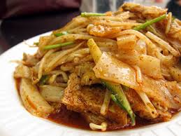
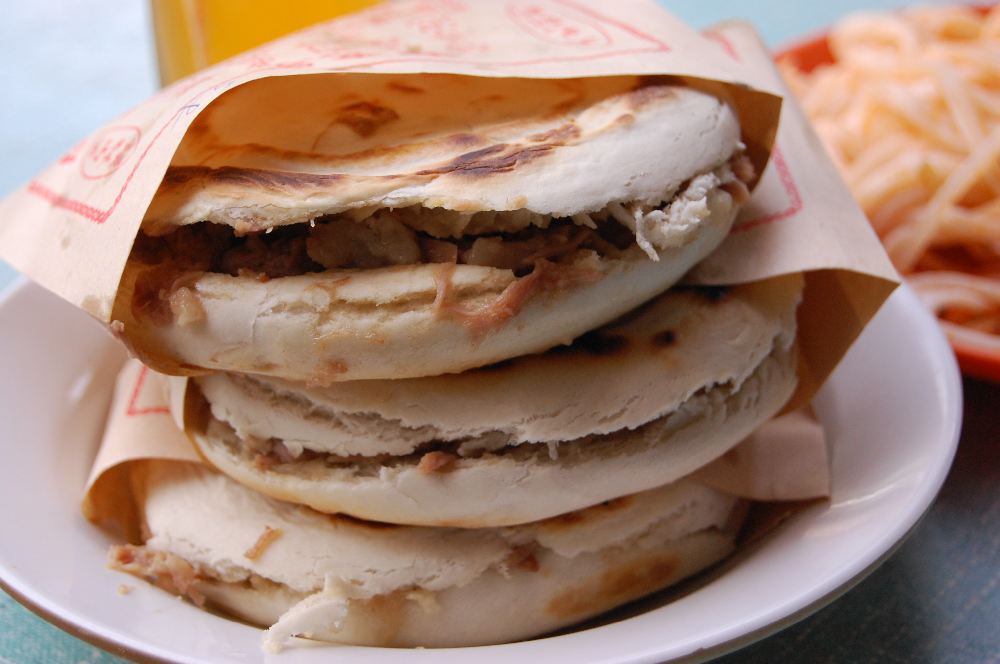
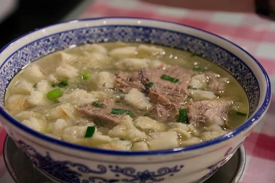
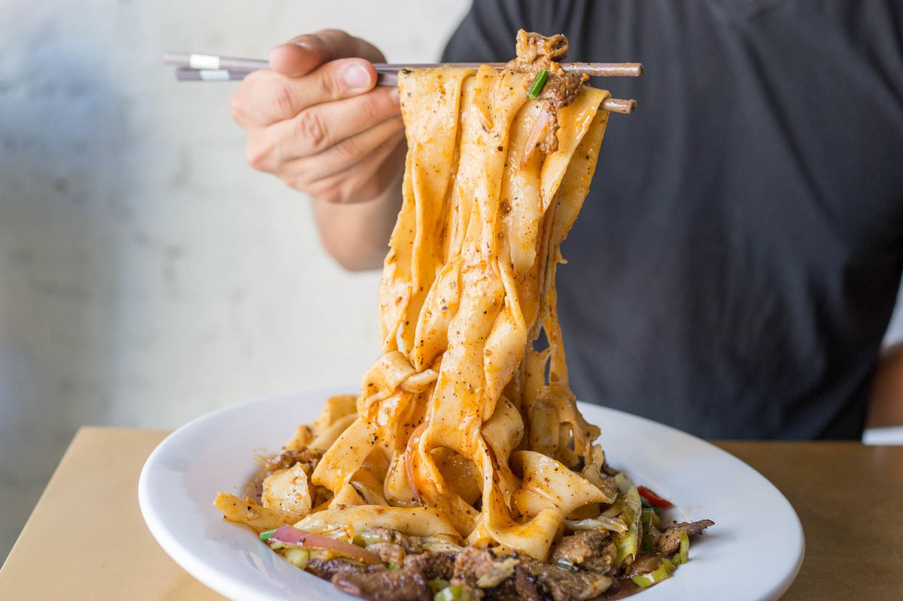

History
Food
Gallery
Food of Xi'an
The eternal city of Xi'an is also known as a “culinary capital” because of Xian’s distinctive food culture and its unique flavors and textures, with particular influences from Muslim culture. Below are some of the most famous dishes.

凉皮 Cold Noodle

肉夹馍 Rou Jia Mo

羊肉泡馍 Lamb Pao Mo

油泼面 Oil-Spill Noodles